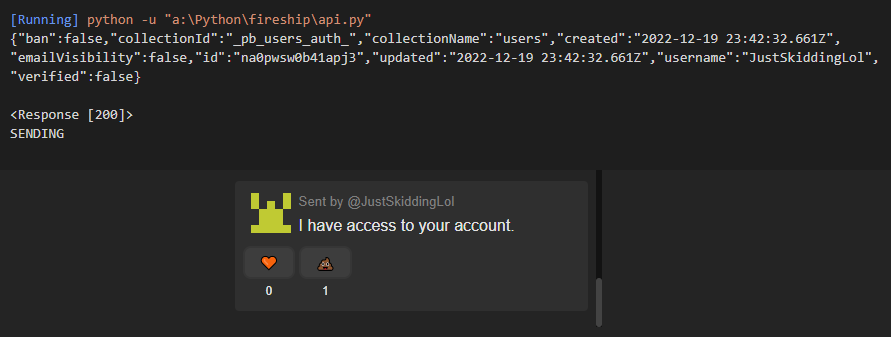

blog.vsim.xyz / blog Public
blog.vsim.xyz / blog Public
JWTF - JSON Webtoken Fu- *forgery..
Looking at how weak implementations can break API's
Premise
Json Webtokens, or JWT's for short are widely used as authentication tokens for webapplications.
As this article
says, there are currently around 22,000+ open source projects using the JWT library.
JWT tokens are easy to spot, as they're often found in cookies in base64 format, beginning with
eyJhbGciOiJIUzI1NiIsInR5cCI6IkpXVCJ9. and continuing.
The structure of them is simple as they consist of three parts:
head.token.tail
In the head is to be found the following data, "alg": (often) "HS256" and "typ": "JWT". The algorythm part tells the server
what algorythm was used with the secret key to create a hash of the head
and the token. This hash is then used as the tail, which can be then used to check the
integrity of the JWT on the backend.
The trickery
Ok, ok, I get it, you didn't come here to be lectured on how the authentication tokens work. I'm going to go through two techniques that an adversary can use to break an API that has been written haphazardly, loosely, you know.
- Crafting an authentication token.
- Using any valid token to access data.
To drive the point further that these are vulnerabilities plaguing modern webapplications we're going to use Fireship's chat application as an example. When the app was online, Fireship had a video titled "I built a $5 chat app with Pocketbase & Svelte. Will it scale?" and the chat application has since been taken down, so there is no harm to be made here by revealing the bugs.
Crafting tokens.
If you didn't sleep on the intro to this article, you know JWT's
themselves contain data on their verification method. The head
tells the server which algo has been used to create the hash for the tail
part of the token, so we know how to validate the integrity of the token. If the data inside the token has been tampered with, the hash (tail)
will not match the one the server will be able to create with the secret key.
In this chat application, the data is as follows:
"collectionId":"_pb_users_auth_",
"collectionName":"users",
"created":"2022-12-19 21:23:56.343Z",
"email":"",
"emailVisibility":false,
"id":"na0pwsw0b41apj3",
"updated":"2022-12-19 21:23:56.343Z",
"username":"vs1m",
"verified":false,
"expand":{}} }
If we simply change the "alg" to "none" -- and get this -- it actually does work, the server will not check the tail of the JWT! Meaning we can change the "id" or "username" to send out requests for the API. In this case it was changing the "id" and/or the "username" of the token into the accounts you wanted to send a message as.

These were publically avialabe from the API, where from path /api/collections/messages/records anyone was able to fetch all of the messages sent and their sender (containing ID and Username), or /api/collections/users/records where from anyone could see all of the registered users (and their IDs) This is how people could find out Fireship's own accounts ID and send messages as him:
Accessing stuff cross accounts.
That's all fine and dandy, but what if the developers actually implemented the JWT as such that it can not be forged artifically by the user? Is there any other way to access other users data, or in this case, use other peoples accounts to send messages..?Of course!
The Chat Applications API works this way: You POST request the path /api/collections/messages/records with a JSON payload consisting of a message and the user ID. Noteworthy is that you can not do this without the JWT in your Cookie- header.
Let's take a look at this code I wrote.

It will print out the ID of the user currently logged in, and then the ID of the user we want to send the message as. Now let's take a look at the output:
We can see the account the JWT token belongs to (well you can't see the token, but you're going to have to trust me on this one) has different ID than the account we're asking the API to send the message as. Here's what it looks like from the point of view of the user:
What we can derive from this is that the server, when accepting a message, does this:
- It checks if you're logged in
- It looks at what your ID is
- It writes a new message according to the ID given.
The problem is that the server does not verify your ID in the JWT is the same as the one you're sending the message as. It only checks if a token is present, and if it's valid it accepts your request. There is no way to validate the "ID" field on the JSON of the POST request, so it just has to trust you've put in the correct one. On this simple chat app it only means impersonation, but on other applications it could mean leakage of personal information or even loss of accounts as you're able to tamper with the passwords and other personal data of users without being logged in as them.
Conclusions
As per usual, a few tips for the developer.
Never trust the user. When you create an API
that tells the server which account is
sending the data, or requesting it, do not use parameters you can't verify. JWT is meant to be read, you can
base64 decode the token and read the data from there: if it's crafted correctly,
it should contain who is sending the data.
Don't (just) trust the token either! If you check
the integrity of the token, you can implement the check so that it does it regardless of what's
said in the head of the JWT.
You know you use HS256 -- you don't need to check the token for this every time a request comes in ;).
And that's about it. Thanks for reading, and I hope you learned something!
-Vs1m.